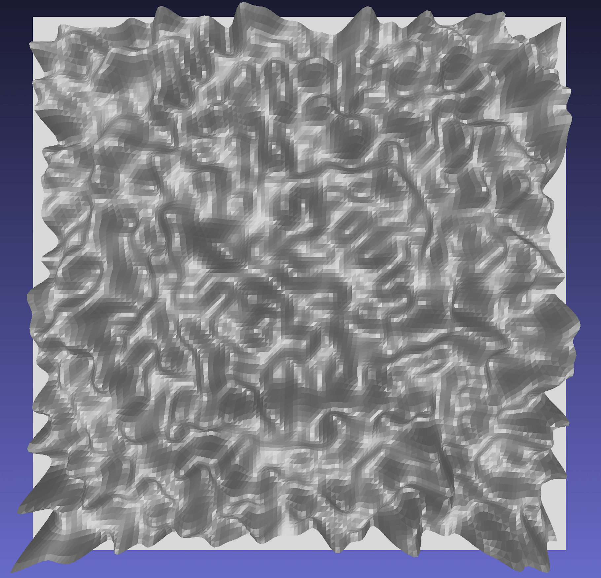

stlutils module¶
STL file generation¶
This is a simple “brute force” conversion resulting in large files. Each rectangle in the rastered data is simply converted to two triangles.
The resulting stl file therefore includes:
vertex list: x-, y-, and z-coordinates of all points in the original surface
faces: triangles represented by the indices of their corners in the vertex list
vectors: normals of these triangle faces
You can reduce the size of the file afterwards. In MeshLab, for example, you can use “Filters -> Simplification: Quadratic Edge Collapse Decimation”, where “Percentage reduction” is the target mesh size relative to the original.
Examples¶
Generate a blurred uniform random surface profile and save it to an stl file with an added border around it:
import numpy as np
import stlutils
import scipy.ndimage as ndi
data = np.random.default_rng(1234).uniform(0, 1, (128,128))
data = ndi.gaussian_filter(data, 2)
stlutils.convertArray(data, 'random.stl', Lx=1., Ly=1., border=8)
Save the same array to a config file and convert it to stl without the border around it:
import cmutils as cm
cm.dumpConfig(data, 'random.dat')
stlutils.convertFile('random.dat', 'random2.stl')
The resulting stl file (with border) looks like this:
API documentation¶
- stlutils.add_border(array: ndarray, border: int, flip: bool)[source]¶
Add border around 2D height array assuming uniform lattice spacing.
- Parameters:
array (np.ndarray) – Array of shape (nx,ny) containing z coordinates.
border (int) – Width of the border in ‘pixels’.
flip (bool) – Whether or not to flip the topography upside-down.
- Returns:
bordered_array (np.ndarray) – Updated 2D array of shape (nx+2*border, ny+2*border).
- stlutils.add_foundation(vertex_list: ndarray)[source]¶
Add to vertex list the vertices representing the bottom foundation of the 3D model.
- Parameters:
vertex_list (np.ndarray) – Array of shape (nx*ny, 3).
- Returns:
new_vertices (np.ndarray) – Updated vertex list of shape ((nx+2)*(ny+2), 3).
- stlutils.convertArray(array: ndarray, outpath: str, Lx: float = 1, Ly: float = 0, flip: bool = False, foundation: bool = True, border: int = 0)[source]¶
Create stl file from 2D numpy array.
- Parameters:
array (np.ndarray) – Array of shape (nx,ny) containing z coordinates.
outpath (str) – Filepath to the stl output file.
Lx (float, optional) – Physical dimension of the topography in x direction. Default is 1.
Ly (float, optional) – Physical dimension of the topography in y direction. Default is 0.
flip (bool, optional) – Whether or not to flip the topography upside-down. Default is False.
foundation (bool, optional) – Whether or not to add 2 triangles representing the bottom of the 3D model. Default is True.
border (int, optional) – Width of the border in ‘pixels’. Default is 0.
- stlutils.convertFile(inpath: str, outpath: str = '', norm=1, flip=True, foundation=True)[source]¶
Create stl file from config file.
- Parameters:
inpath (str) – Filepath to a contMech config file containing nx*ny points.
outpath (str, optional) – Filepath to the stl output file. Default is “”.
norm (float, optional) – Factor, by which to multiply coordinates. Default is 1.
flip (bool, optional) – Whether or not to flip the topography upside-down. Default is True.
foundation (bool, optional) – Whether or not to add 2 triangles representing the bottom of the 3D model. Default is True.
- stlutils.create_faces(foundation: bool = True)[source]¶
Calculate the 2*(nx-1)*(ny-1) triangles contained in a nx*ny surface.
- Parameters:
foundation (bool, optional) – Whether or not to add 2 triangles representing the bottom of the 3D model. Default is True.
- Returns:
faces_list (np.ndarray) – Array of shape (2*(nx-1)*(ny-1) + foundation*2, 3) containing the indices of the 3 vertices of each triangle.
- stlutils.from_array(array: ndarray, Lx: float = 1, Ly: float = 1, flip: bool = False)[source]¶
Convert 2D height topography to a 3D vertex list assuming uniform lattice spacing.
- Parameters:
array (np.ndarray) – Array of shape (nx,ny) containing z coordinates.
Lx (float, optional) – Physical dimension of the topography in x direction. Default is 1.
Ly (float, optional) – Physical dimension of the topography in y direction. Default is 1.
flip (bool, optional) – Whether or not to flip the topography upside-down. Default is False.
- Returns:
vertex_list (np.ndarray) – 3D vertex positions as an array of shape (nx*ny, 3).
- stlutils.from_file(inpath: str, flip: bool = True)[source]¶
Convert 2D height topography to a 3D vertex list assuming uniform lattice spacing.
- Parameters:
inpath (str) – Filepath to a contMech config file containing nx*ny points.
flip (bool, optional) – Whether or not to flip the topography upside-down. Default is True.
- Returns:
vertex_list (np.ndarray) – 3D vertex positions as an array of shape (nx*ny, 3).
Warning
These files assume that the surface is periodically repeatable!
Warning
flip=True is default since these files store the surface upside down!
- stlutils.save_mesh(vertex_list: ndarray, faces_list: ndarray, outpath: str)[source]¶
Create mesh from vertices and faces and save it to an stl file.
- Parameters:
vertex_list (np.ndarray) – Array of shape (nx*ny, 3).
faces_list (np.ndarray) – Array of 3-tuples of indices, where each of those 3-tuples forms a triangle in vertex_list.
outpath (str) – Filepath to the stl output file.